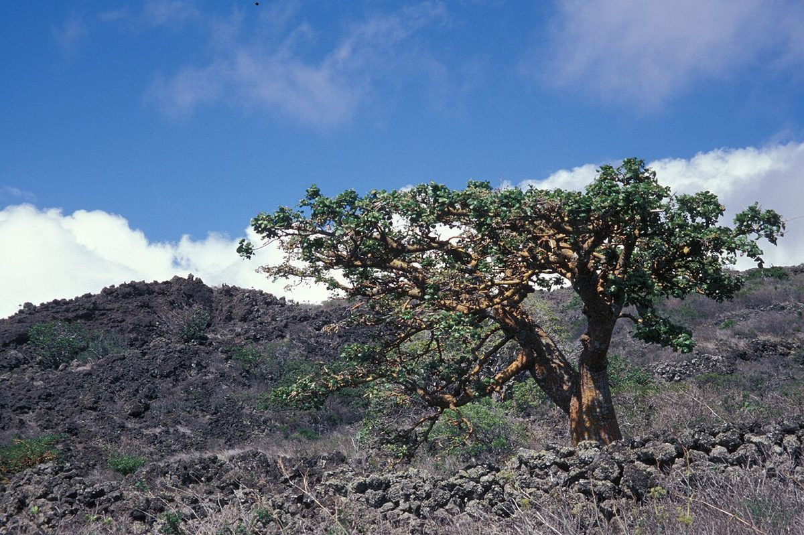
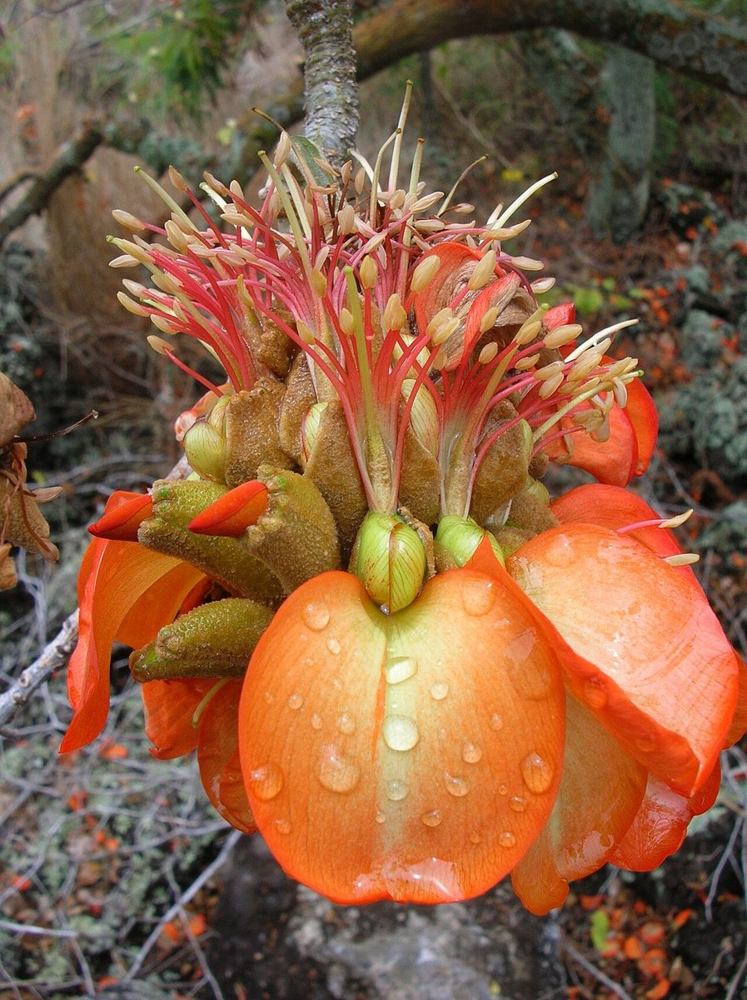
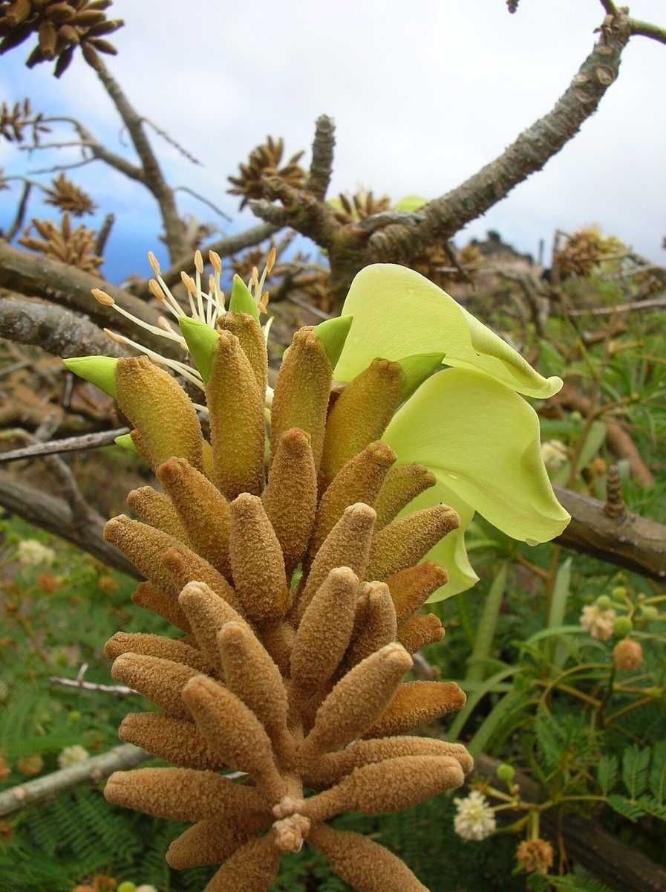

Erythrina sandwicensis
wiliwili · Hawaiian coral tree



Quick facts
| Family | Fabaceae |
|---|---|
| Scientific name | Erythrina sandwicensis |
| Hawaiian name(s) | wiliwili |
| English name(s) | Hawaiian coral tree |
| Status | Endemic |
| Conservation | Not federally listed, but actively monitored because of the erythrina gall wasp (*Quadrastichus erythrinae*), first detected in Hawaiʻi in 2005, which has caused significant tree mortality. |
| Coastal zones | Sea cliff Valley mouth |
| Occurrence | Scattered on dry sea-cliff slopes and valley terraces of the drier western Nā Pali–Kona coast; also documented on the Māhāʻulepū dry coastal terrace. Look upslope from the beach where dry-forest species descend to the coast. |
How to identify
- Growth form
- A small-to-medium deciduous tree, 5–15 m, with a broadly spreading crown; on cliff sites often stunted or gnarled. Wood is soft and unusually lightweight (density near cork).
- Size
- 5–15 m tall; cliff-form trees often 3–6 m.
- Leaves
- Present in the wet season only. Alternate and trifoliate, with a conspicuously larger, rhombic-ovate terminal leaflet and two smaller lateral leaflets on a long petiole. The tree is fully leafless during the dry-season flowering period.
- Flowers
- Dense, upright terminal racemes 10–20 cm long. Colour varies — orange, salmon, cream, greenish, or pale yellow — but any single tree (and often a whole population) produces one colour only. Flowering happens on bare branches before or during leaf flush.
- Fruit / seed
- A curved, conspicuously constricted between-seed woody pod ~10–15 cm long, containing 2–5 bright orange-red hard seeds.
- Bark / stem
- Grey-brown, sometimes with small stem prickles on young growth; wood unusually light, soft, and orange-brown when cut.
- Where it sits on the coast
- Dry sea-cliff slopes, dry-forest fringes reaching the coast, and coastal terraces of the western/leeward sector.
Clinchers (features that lock the ID)
- Leafless when flowering — dense terminal racemes on bare branches.
- Curved constricted pods containing bright orange-red seeds.
- Trifoliate leaves with a much larger diamond-shaped terminal leaflet.
- Very light, soft orange-brown wood when a cut branch is examined.
Look-alikes
- Erythrina crista-galli (introduced coral tree) — Introduced cultivated tree only; larger, deep-red, waxy flowers that hang down (not standing upright); heavier stem prickles. Not found on the unpopulated Kauaʻi coast.
- Adenanthera pavonina (jumbee bead) — Also has bright red seeds, but leaves are bipinnate (twice compound), pods spiral open when dry, and the tree is evergreen — nothing like the leafless-at-flowering wiliwili.
Ecology
Wiliwili is a keystone tree of Hawaiian dry forest, dropping its leaves to flower during the driest months and pollinated by native birds (historically) and now largely by introduced honeybees. The 2005 arrival of the erythrina gall wasp caused rapid decline of wiliwili populations statewide; a subsequent biocontrol program using the parasitoid *Eurytoma erythrinae* has partially stabilized populations. [1], [2], [3], [9], [10], [31], [36]
Cultural significance
The light, buoyant wood was worked by Hawaiian craftsmen for canoe ama (outrigger floats), papa heʻe nalu (surfboards/bellyboards), and net floats; the bright red seeds were strung as lei. This guide names those relationships without providing harvesting or shaping instructions — that transmission belongs to Hawaiian practitioners.